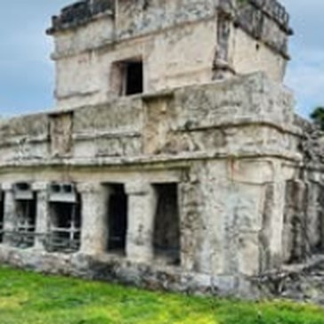
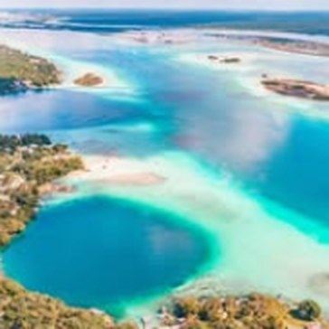
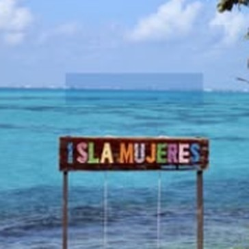
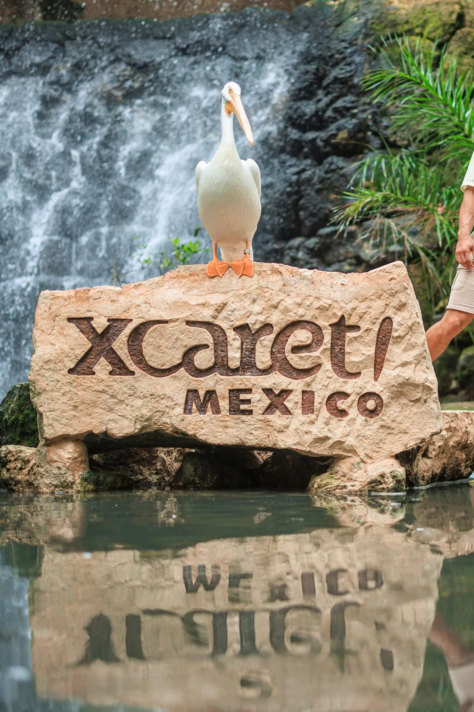

El Cielo, Cozumel
Un coin de paradis aux eaux cristallines : snorkeling parmi les étoiles de mer, les coraux et les tortues.
Réserver →Des excursions soigneusement sélectionnées pour découvrir le Yucatán en toute sérénité.
Chaque excursion s'adapte à votre rythme et à vos envies.
Un message WhatsApp suffit, nous vous répondons rapidement.
Des recommandations sincères de quelqu'un qui vit ici.
Collection
Toutes nos excursions partent de Playa del Carmen. Tarifs et disponibilités sur demande, réponse rapide sur WhatsApp.
Un coin de paradis aux eaux cristallines : snorkeling parmi les étoiles de mer, les coraux et les tortues.
Réserver →
Découvrez la cité maya inscrite parmi les sept nouvelles merveilles du monde et sa célèbre pyramide de Kukulcán.
Réserver →
Deux sites mayas incontournables : Tulum face à la mer des Caraïbes et Cobá au cœur de la jungle.
Réserver →
La lagune aux sept couleurs, des eaux turquoise à perte de vue pour une journée inoubliable.
Réserver →
Une réserve naturelle préservée, classée au patrimoine mondial de l'UNESCO, entre lagunes, mangroves et plages sauvages.
Réserver →
Navigation en catamaran, baignade et snorkeling dans les eaux turquoise d'Isla Mujeres.
Réserver →
Le célèbre parc éco-archéologique à quelques minutes de Playa del Carmen : rivières souterraines, plages, faune locale et grand spectacle du soir.
Réserver →Une aventure en quad à travers la jungle de la Riviera Maya : pistes de terre, sensations fortes et nature sauvage.
Réserver →À propos
Vibe Riviera Maya est née d'un amour profond pour cette région. Notre mission : vous faire vivre les plus beaux endroits du Yucatán, avec le confort et l'attention que vous méritez.
Réservation
Remplissez le formulaire : votre demande s'ouvrira directement dans WhatsApp.